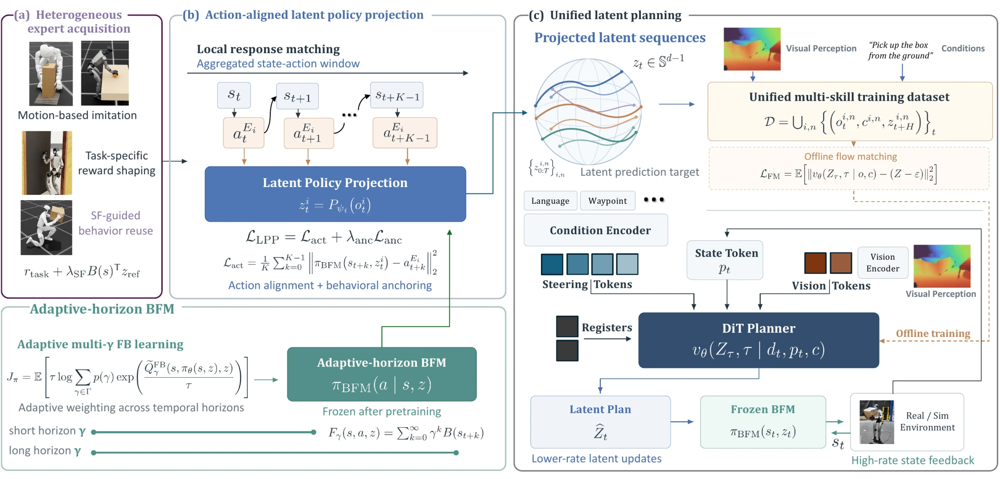

Modular acquisition and unified control
Skills can be acquired with different observations, rewards, and training pipelines, then embedded into the shared latent space of a frozen behavioral foundation model.
Affiliations withheld for anonymous review
FIBER converts independently acquired interaction experts into executable latent behaviors and learns one vision-conditioned planner entirely offline over a frozen behavioral foundation model.
Key idea
FIBER preserves the flexibility of task-specific expert training while decoupling it from downstream generalist learning.
Skills can be acquired with different observations, rewards, and training pipelines, then embedded into the shared latent space of a frozen behavioral foundation model.
Latent Policy Projection (LPP) matches each expert's short-horizon action responses, producing lower-rate latent targets that retain high-frequency state feedback.
Adaptive multi-γ forward-backward learning balances precise local control with temporally extended whole-body behavior in one latent space.
Method
Experts are projected independently, collected in a shared executable representation, and merged into one perception-conditioned latent planning dataset.

Interaction experts come from motion imitation, task-specific reward shaping, or successor-feature-guided reuse of native whole-body behaviors.
LPP identifies latent commands through the expert actions they induce over a local horizon, with behavioral anchoring reducing ambiguity among action-equivalent latents.
A DiT flow planner predicts future latent trajectories from onboard depth, proprioception, and steering tokens such as language commands or navigation waypoints.
Real-world evaluation
Interaction experts, latent projectors, and the unified planner are trained entirely in simulation and deployed with onboard depth perception.
Whole-body approach, contact, lift, and box stabilization.
Perceptive articulated interaction using the shared latent interface.
Fine-grained grasping under challenging onboard depth localization.
Simulation results
Each task is evaluated on 128 variations spanning object geometry, placement, door geometry, and grasped objects.
| Method | Pickup Box | Open Door | Grasp Object | Mean | ||
|---|---|---|---|---|---|---|
| with approach | without | with approach | without | |||
| Task-specific policies | ||||||
| Expert Policy | 100.0 ± 0.0 | 90.8 ± 0.5 | 89.3 ± 0.2 | 97.9 ± 0.8 | 97.0 ± 0.8 | 95.4 |
| Ours - LPP Projector | 81.9 ± 0.9 | 87.4 ± 2.4 | 83.5 ± 1.8 | 97.3 ± 0.4 | 52.9 ± 2.1 | 72.8 |
| Reference-prompted execution | ||||||
| SONIC | 0.0 ± 0.0 | 0.0 ± 0.0 | 0.4 ± 0.0 | 3.1 ± 0.0 | 12.1 ± 0.0 | 4.2 |
| FALCON | 0.0 ± 0.0 | 0.0 ± 0.0 | 0.4 ± 0.0 | 2.7 ± 0.0 | 11.9 ± 0.3 | 4.1 |
| B(s) Tracking | 0.0 ± 0.0 | 0.0 ± 0.0 | 0.4 ± 0.0 | 5.6 ± 0.5 | 13.9 ± 0.5 | 4.8 |
| Ours - Projected Replay | 11.2 ± 0.8 | 17.7 ± 1.2 | 12.2 ± 0.9 | 49.5 ± 0.6 | 11.3 ± 1.1 | 11.6 |
| Perceptive planning | ||||||
| OmniContact | 29.9 ± 0.2 | 49.6 ± 0.0 | — | — | — | — |
| LessMimic | 38.3 ± 0.0 | 28.5 ± 0.0 | — | — | — | — |
| Kinematic Planner | 0.0 ± 0.0 | 0.0 ± 0.0 | 0.0 ± 0.0 | 0.0 ± 0.0 | 10.6 ± 0.5 | 3.5 |
| FIBER | 42.1 ± 0.6 | 44.1 ± 1.0 | 53.5 ± 4.8 | 51.2 ± 1.0 | 30.3 ± 2.3 | 42.0 |
Success rates in percent. “With approach” includes the approach phase; “without” starts near interaction. Mean uses with-approach settings.
Adaptive-horizon analysis
The adaptive multi-γ model achieves the lowest joint tracking error and the best behavior-embedding distance at 0.5, 1, and 2 seconds, balancing the strengths of short- and long-horizon objectives.
| Method | Joint-MAE ↓ | 0.2 s ↓ | 0.5 s ↓ | 1 s ↓ | 2 s ↓ |
|---|---|---|---|---|---|
| SONIC | 0.1315 | — | — | — | — |
| BFM γ=0.8 | 0.1107 | 0.038 | 0.200 | 0.495 | 0.792 |
| BFM γ=0.98 | 0.1327 | 0.048 | 0.213 | 0.451 | 0.601 |
| Adaptive-horizon BFM | 0.1020 | 0.049 | 0.195 | 0.422 | 0.590 |
Paper
Learning a single humanoid controller for diverse loco-manipulation remains challenging, as task-specific interaction skills are often acquired with different objectives, observations, and training procedures. Existing approaches either rely on on-policy multi-expert distillation, which couples generalist training to task-specific acquisition pipelines, or learn offline from collected data, where direct action targets suffer from limited closed-loop coverage and intermediate kinematic or contact representations can remain physically ambiguous. We propose FIBER, a framework that learns versatile humanoid loco-manipulation from heterogeneous experts through offline planning over a frozen behavioral foundation model. We introduce Latent Policy Projection, which locally projects each expert into the BFM latent space by aligning the actions induced by latent commands with the expert's short-horizon control responses. The resulting lower-rate latent targets retain high-frequency state feedback through the frozen BFM and can be jointly learned by a unified perceptive planner. To make this shared latent space suitable for both precise interaction execution and diverse whole-body behaviors, we further introduce an adaptive-horizon BFM trained with adaptive multi-γ forward-backward learning. We evaluate FIBER on box pickup, door opening, and object grasping in simulation and transfer all three tasks to a real Unitree G1 humanoid. FIBER achieves 42.0% mean simulation success, more than doubling projected latent replay (11.6%) and substantially outperforming kinematic planning (3.5%), while LPP closely preserves expert performance on box pickup and door opening. Real-world experiments further demonstrate sim-to-real transfer, skill chaining, and conditional steering through the same unified planner.
Reference
Anonymous citation for the review period.
@article{anonymous2026fiber,
title = {Action-Aligned Latent Planning for Versatile Humanoid Loco-Manipulation},
author = {Anonymous Authors},
year = {2026}
}